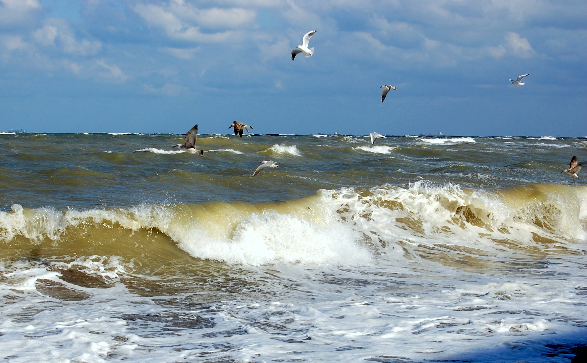

Delta Dunării
Delta Dunării (3446 km²), aflată în mare parte în Dobrogea, România și parțial în Ucraina, este a doua ca mărime și cea mai bine conservată dintre deltele europene. Delta Dunării a intrat în patrimoniul mondial al UNESCO în 1992, fiind clasificată ca rezervație a biosferei la nivel național în România și ca parc național în taxonomia internațională a IUCN. Aceasta se suprapune siturilor de importanță comunitară Delta Dunării și Delta Dunării (zona maritimă); precum și ariilor de protecție specială avifaunistică Beștepe - Mahmudia și Delta Dunării și Complexul Razim - Sinoie. Situl Delta Dunării (începând din 21 mai 1991) este protejat prin Convenția Ramsar (The Ramsar Convention on Wetlands) ca zonă umedă de importanță internațională. Parcul național include rezervațiile naturale: Capul Doloșman, Cetatea Histria, Complexul Vătafu - Lunghuleț, Complexul Sacalin Zătoane, Grindul și Lacul Răducu, Grindul Chituc, Grindul Lupilor, Insula Popina, Lacul Potcoava, Pădurea Caraorman, Pădurea Letea, Roșca - Buhaiova, Corbu-Nuntași - Histria, Lacul Belciug, Lacul Potcoava, Lacul Rotundu, Arinișul Erenciuc, Complexul Periteașca - Leahova, Complexul Vătafu - Lunghuleț, Lacul Nebunu, Pădurea Babadag - Codru, Dealul Ghiunghiurmez și Sărăturile Murighiol.
Obiective turistice:
Pe teritoriul și în vecinătatea parcului național se află mai multe obiective de interes turistic (lăcașuri de cult, monumente istorice, situri arheologice, arii protejate, zone naturale); astfel: Biserica ortodoxă „Buna Vestire” din Tulcea, construcție 1869, monument istoric. Mănăstirea și castrul roman Halmyris de la Murighiol. Moscheea Azizyie (Geamia Sultanului Abdulaziz) din Tulcea, lăcașul de cult reprezentativ al comunității musulmane construit în anul 1863, monument istoric. Așezarea greco-indigenă din satul Sălcioara (sit arheologic). Cetatea Argamum - Orgame, sit arheologic aflat în partea de est a județului Tulcea, pe teritoriul administrativ al comunei Jurilovca, în locul numit Capul Doloșman. Acesta este localizat la contactul dintre Podișul Babadagului și Limanul Razim care, în Antichitate, era un golf deschis al mării Negre (golful Argamon). Histria, cetate grecească (ruine) aflată pe teritoriul administrativ al comunei Istria, în județul Constanța; cel mai vechi oraș atestat de pe actualul teritoriu al României. Situl arheologic de la Vișina. Munții Măcinului Marea Neagră Complexul lagunar Razim-Sinoe (Limanele Dobrogene) constituit din cele două unități: Unitatea Razim cu lacurile Golovița, Zmeica, Babadag, Tauc, Topraichioi și cel omonim; și Unitatea Sinoe ce cuprinde lacurile Nuntași, Tuzla și Sinoe

Marea Neagra
Litoralul românesc reprezintă o parte din țărmul occidental al Mării Negre și se întinde de la granița cu Ucraina (Nord, în golful Musura) până la cea cu Bulgaria (Sud, la câteva sute de metri de localitatea Vama Veche). Este cea mai exploatată zonă turistică din România. De-a lungul malului mării se întind 2 municipii, 2 orașe mai mari și alte 2 orașe, mai mici, precum și numeroase stațiuni turistice de vară. Principalele orașe, dar și principala zonă de interes, unde se află majoritatea stațiunilor și a atracțiilor turistice, este județul Constanța. Celălalt județ riveran este județul Tulcea. Singura regiune istorică riverană este Dobrogea. Principalul oraș, fiind socotit și capitala acestei zone, este Constanța (370.000 locuitori). Al doilea ca mărime este Mangalia (50.000 locuitori). Apoi vine orașul Năvodari (41.000 locuitori) (toate în județul Constanța). Alte orașe sunt: Sulina (27.000 loc.) (Tulcea), Eforie (10.000 loc.) și Techirghiol (7.000 loc.) (Constanța).
